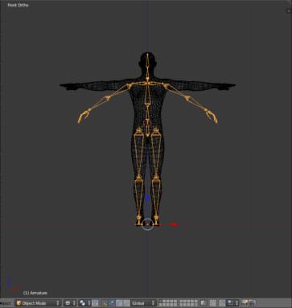
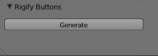
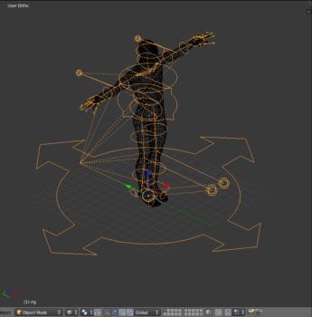
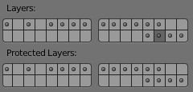
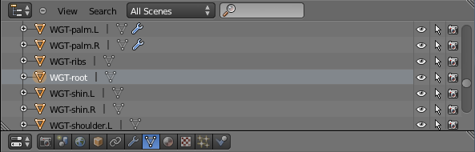
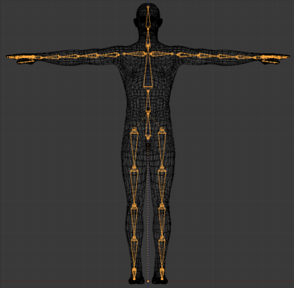
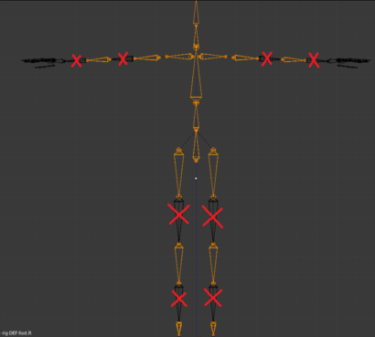
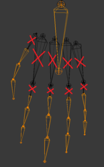
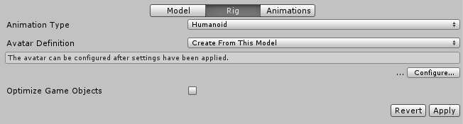
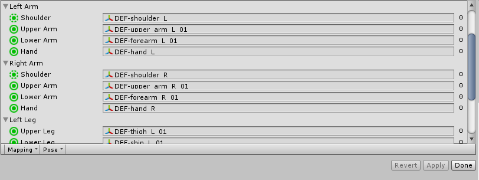

Blender now comes with a free add-on called Rigify that provides your models with a biped rig that will work with Mecanim. This will prove very useful for new and casual game developers.
This guide shows you how to get your 3D model rigged with Rigify and imported into Unity’s Mecanim. Rigify generates a full rig for your model and by using the armature as a template you will be able to forge it into a nice simple rig for humanoid characters. You should start by enabling Rigify within Blender so you can use its features. From there you will import your 3d model and begin to set up your model and armature correctly to avoid any problems later down the line. Once everything is set-up you can position the bones and generate your main rig. The trickiest part is skinning the mesh to the bones you wish to use and ensuring they are parented correctly, and finally (after some testing and polishing) you can import into it into Unity.
3D Humanoid Model (MakeHuman is very useful if you need help with modelling).
Enable Rigify
First you need to ensure that the Rigify add-on has been installed and enabled within Blender:
Go to File > User preferences.
Select the Addons tab, and then scroll to the bottom and click the check box next to “Rigify”
Click “Save User Settings”
This activates the add-on and allows you access to the buttons and features needed. Setting it to default will include it with all your future projects.
Setting up your Armature
Grab a basic humanoid rig that Rigify will use as a template. This rig is very basic but it allows Rigify to build itself around the relative bone positions.
Add Human Armeture: Go to Add (SHIFT + A) > Armature (Human)
Ensure both the armature and model are centred at 0,0,0
If you scale or move the model make sure to reset the scale and/or translation values of both the armature and model.

Go into edit mode (Press Tab)
Begin positioning the bones in their respective place on the model
Use “X-Ray” to allow yourself to see the bones through the model
Once this is complete, go back into object mode.
Move the armature to the side so it is out of the way.
(If you are using Make Human, you may want to join the many different meshes into one complete mesh. Do this by selecting all the meshes and pressing CTRL + J)
Generating your Rig
While the armature is selected click the Object data tab on the far right.
Under “Rigify Buttons” click Generate.

Switch to Pose mode and do the following:

Press the (A) key to select the rig and then press the (H) key to hide the unwanted layers.
Shift click on the Armature layer below.

This will reveal the deformation bones, the deformation bones are what you will need to skin and weight paint your mesh to.
If all deformation bones do not appear check the “Auto Run Python Scripts” option under File > User Preferences>File and re-generate
Deleting WGT bones
You will notice in the top right corner in the scene’s hierarchy you have many WGT-bones (WGT stands for Widget).

As these bones will not be skinned to the mesh or used at all, we will need to delete them to avoid having unassigned meshes in our Unity project. Right click on the bone and select “Delete”. Do this for each WGT-bone in the scene.
Skinning the Rig to the Model
Skin the model to the deformation bones.

Before you start, make sure you are in object mode and select the mesh, then hold shift and select the rig, press Ctrl + P and select Armature deform > With Automatic weights.
This will assign the mesh to the bones creating vertex groups, this is what we will use for the skinning process.
(If you have little or no knowledge of skinning in blender take a look at the tutorial.)
Note that the deformation bones will use two bones for each of the upper and lower limbs. Do not skin to the 2nd bone and ensure they are re-parented so that Mecanim will link them up correctly.
Skin your Shoulders to “DEF-shoulder.R” + “DEF-shoulder.L” and ensure their parent is “ORG-ribs”
Skin your Upper arms to “DEF-upper_arm.R.01” + “DEF-upper_arm.L.01” and ensure their parent is “DEF-shoulder.R” or “DEF-shoulder.L” respectively.
Skin your Forearms to “DEF-forearm.R.01” + “DEF-forearm.L.01” and ensure their parent is “DEF-upper_arm.R.01” or “DEF-upper_arm.L.01” respectively.
Skin your thighs to DEF-thigh.R.01 + DEF-thigh.L.01 and ensure their parent bone is “ORG-hips”.
Skin your Shins to DEF-shin.R.01 + DEF-shin.L.01 and ensure their parent is “DEF-thigh.R.01” or “DEF-thigh.L.01” respectively.
This will provide you with a rig that is skinned to the bones shown without an X through them. The spare bones should not be skinned to anything!

Do the same thing to the hands, just remember Mecanim will only take the hand bone and three bones for each finger and thumb. This means you skin the model’s hands to the bones without crosses through them as shown in the picture below.

In the same way the hand must be parented to the correct bones. Skin your Hands to “DEF-hand.R” + “DEF-hand.L” and ensure their parent is “DEF-forearm.R.01” or “DEF-forearm.L.01” respectively.
For each finger and thumb you will be using the following (left hand as an example):
Remember that each finger bone should always be parented to the last and the first bone should be parented to the hand, providing a neat link for Mecanim to deal with.
Export and Import
Export the model as a .fbx and place it in a folder separate from your project. file > Export > AutoDesk FBX (.fbx) > Export. Once this is done you can begin to import it into Unity and get it linked up to Mecanim.
Open Unity and create a new project called “Rigify Test” once it is open, simply drag and drop your model into the project window.

Select the model’s prefab in the project window and click Rig in the inspector. Change Animation Type to Humanoid and click Configure.
All the bones should now link up nicely into Mecanim.

Ensure all bones are in the right places and that there are no errors.